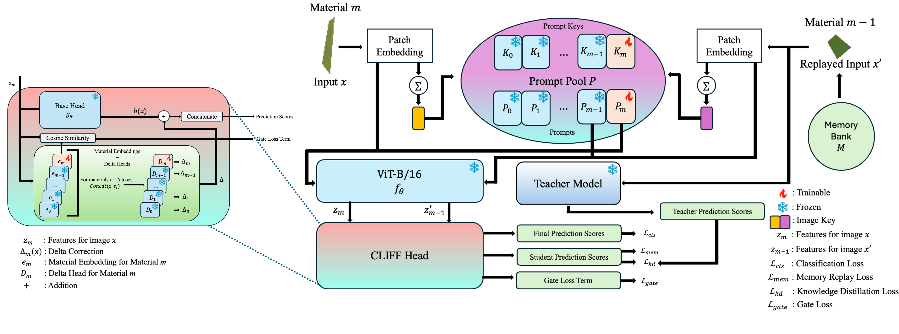
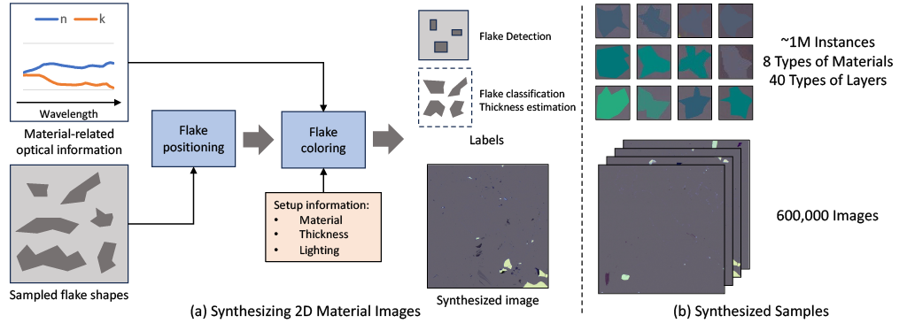
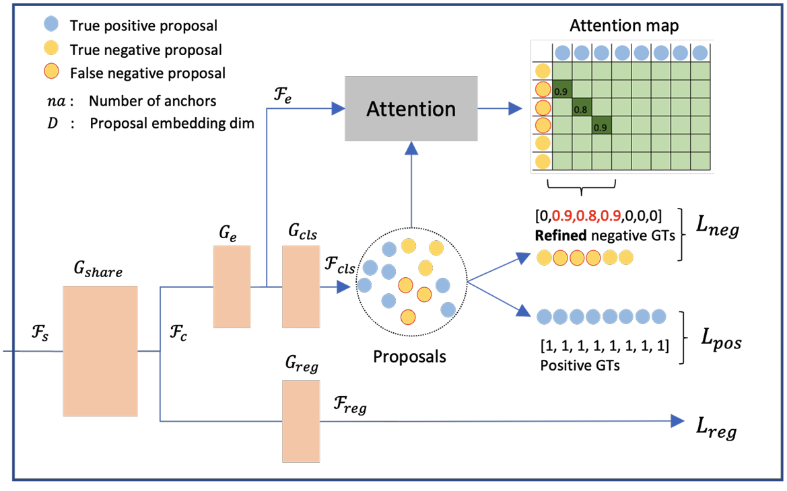

OpenQlaw
Agentic AI assistant for 2D quantum-material analysis, connecting visual reasoning and context-aware interaction.
The framework and research hub for automated 2D quantum materials characterization from optical microscopy.
QuantumFlake is the is pipeline for flake detection, layer analysis, and experiment-facing outputs.
Normalization, calibration support, and preprocessing for reliable input quality.
Modular detector backends for reliable flake localization across microscopy studies.
Layer predictions and analysis for experiments.
Agentic AI assistant for 2D quantum-material analysis, connecting visual reasoning and context-aware interaction.

Physics-aware multimodal for robust flake reasoning across materials and imaging conditions.

Continual learning for adapting flake classification as new incremental material variations are introduced.

Physics-informed adaptation for synthetic-to-real transfer and robust flake thickness analysis across domain shifts.

Automated flake-identification work that established a baseline for 2D material analysis.
US20240282086A1
Khoa Luu, Xuan Bac Nguyen, Hugh Churchill.
US Patent App. 18/443,058 (2024).
Google Patents
OpenQlaw: An Agentic AI Assistant for Analysis of 2D Quantum Materials
Sankalp Pandey, Xuan-Bac Nguyen, Hoang-Quan Nguyen, Tim Faltermeier, Nicholas Borys, Hugh Churchill, Khoa Luu (2026).
arXiv:2603.17043
QuPAINT: Physics-Aware Instruction Tuning Approach to Quantum Material Discovery
Xuan-Bac Nguyen, Hoang-Quan Nguyen, Sankalp Pandey, Tim Faltermeier, Nicholas Borys, Hugh Churchill, Khoa Luu (2026). CVPR 2026 Findings.
arXiv:2602.17478
CLIFF: Continual Learning for Incremental Flake Features in 2D Material Identification
Sankalp Pandey, Xuan Bac Nguyen, Nicholas Borys, Hugh Churchill, Khoa Luu (2025). NeurIPS 2025 AI4Mat Workshop.
arXiv:2508.17261
φ-Adapt: A Physics-Informed Adaptation Learning Approach to 2D Quantum Material Discovery
Hoang-Quan Nguyen, Xuan Bac Nguyen, Sankalp Pandey, Tim Faltermeier, Nicholas Borys, Hugh Churchill, Khoa Luu (2025). Under review.
arXiv:2507.05184
Two-Dimensional Quantum Material Identification via Self-Attention and Soft-Labeling in Deep Learning
Xuan Bac Nguyen, Apoorva Bisht, Benjamin Thompson, Hugh Churchill, Khoa Luu, Samee U. Khan (2024). Published in IEEE Access.
IEEE Access
This work is partly supported by MonArk NSF Quantum Foundry (DMR-1906383) and NSF Quantum Award (2444042). It acknowledges the Arkansas High-Performance Computing Center for providing GPUs.